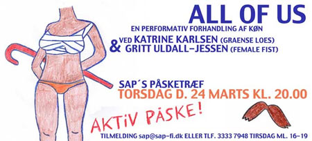

| dunst recommends this event | 24. Marts 2005 |
 |
|
| Invitation til "All Of US" -en performativ forhandling af køn ved Katrine Karlsen(GRAENSE LOES) og Gritt Uldall-Jessen(FEMALE FIST) Vær med til at forme en dramatisk scene, hvor en repræsentant fra menneskekategorien gør op med Lægevidenskaben, Staten, Kirken og Medierne i forsøget på at definere køn UDEN om disse instanser. "All Of Me. Why Don´t You Take ALL OF ME?". "All Of US" er teatral aktivisme, hvor grænsen imellem teater og politisk aktivisme, scene og sal er ophævet, og hvor publikum direkte indgår som materiale i performancen. Aktiv påske! Torsdag d. 24 Marts kl. 20. 00 SAP´s påsketræf Tilmelding kan ske på sapsap-fi.dk eller telefon 33337948 tirsdage og torsdage mellem 16-19. Der er dog lukket for tilmelding til overnatning, da der ikke er flere ledige sovepladser. Sted: Naturskønne omgivelser nær Helsingør - tæt ved skov og strand. |
|
| Tilbage |